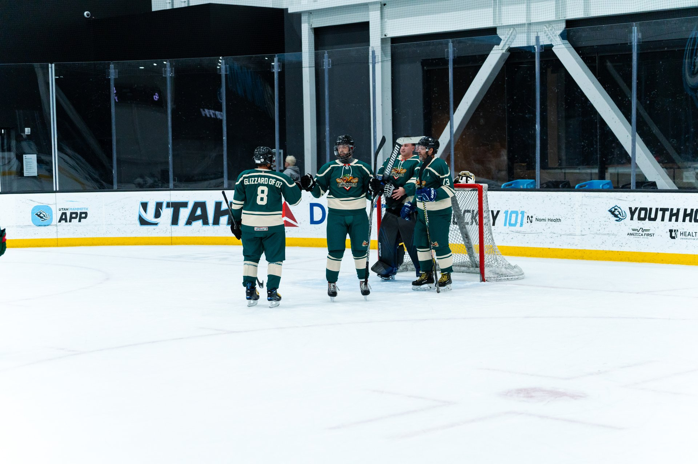

Let's get one thing straight: nobody in beer league needs a $329 stick. You are not taking one-timers on a power play in front of 18,000 people. You are trying to not fan on a wide-open net, keep the puck flat on a saucer to your D-partner, and get through a full season without a two-piece disaster on a routine slapper. Good news — the sticks that do all of that live comfortably under $150 in 2026. Here's how to pick one, plus the models rec players keep coming back to.
The single best piece of gear advice for beer league: buy for the season, not the highlight reel. One top-tier stick that costs $300 and snaps in three months is a worse deal than three roughly $100 sticks that each last. With the mid-range approach you get consistent feel, always have a backup in the bag, and don't spiral into grief when a stick blades out on a nothing play.
These are the models that show up again and again in 2026 buyer guides as the value sweet spot for adult rec players. Prices float with sales, so watch for last-season closeouts — that's where the real steals hide.
The Ribcor line is basically built for us. The 65K is light, strong, and uses a low-kick design for a fast release — everything you want without the premium tag. If you play a lot of men's league and just want a dependable, quick-shooting stick under $150, this is the easy default.
The Vapor X4 drags Bauer's signature low-kick tech down into the budget tier. If your game is snapping quick wristers and getting shots off in traffic, the Vapor family loads and releases fast. A reliable pick for the "get it on net before the D closes" crowd.
If you're a do-everything player who wants versatility over a specialty, the TRUE A4.5 SBP and the Warrior Covert QR Edge are both balanced, forgiving options that handle passing, stickhandling, and shooting without asking you to commit to one style.
If you're hard on gear — you block shots, you battle in the corners, you slash the crossbar in frustration — the Sherwood Rekker Legend 4 is the pick reviewers reach for when longevity is the priority. A stick that survives you is a stick that saves you money.

Skip the marketing and dial in three things:
Flex is how much the shaft bends. The classic starting point is a flex number around half your body weight in pounds — a 180 lb player starts near 85-90 flex — then go softer if you're a finesse shooter or cutting the stick down (cutting it stiffens it). Most adult men land in the 70-85 range. Too stiff and you can't load it; too soft and shots sail. When in doubt, go a touch softer — it's more forgiving for a rec shot.
Kick point is where the stick loads and springs. Low kick = fast, close-range wrist and snap shots. Mid kick = more power on slap shots and one-timers from distance. For the vast majority of beer league situations — quick shots off a pass near the net — low kick is the move.
A mid-curve, open-face pattern (think the popular "P92"-style curves) is the most beginner-friendly: it helps you elevate the puck and is forgiving on saucer passes. Don't overthink lie unless your stick is visibly heel- or toe-down on the ice.
A stick is only one line on the beginner shopping list, and honestly not the one to blow your budget on — that's helmets, skates that actually fit, and gloves that don't feel like oven mitts. If you're kitting out from scratch, start with our broader beginner path in the guide to joining a beer league in Utah, and once you've got a team, you'll recognize every character in the 10 types of guys in every beer league locker room (yes, the Gear Guy has four sticks; no, he doesn't score more than you).
A $150 twig does nothing hanging in your garage. The Utah Glizzies play at the Mammoth Ice Center in Sandy, and we're always happy to point new players toward the ice. Come find your bench.
Meet the Team Go to The PitGrab a light, low-kick stick like the CCM Ribcor 65K or Bauer Vapor X4, match the flex to roughly half your weight, and resist the urge to spend three figures on carbon you'll snap in a corner. Save the difference for the post-game round. Your shot won't know the price tag — and neither will the goalie you beat with it.